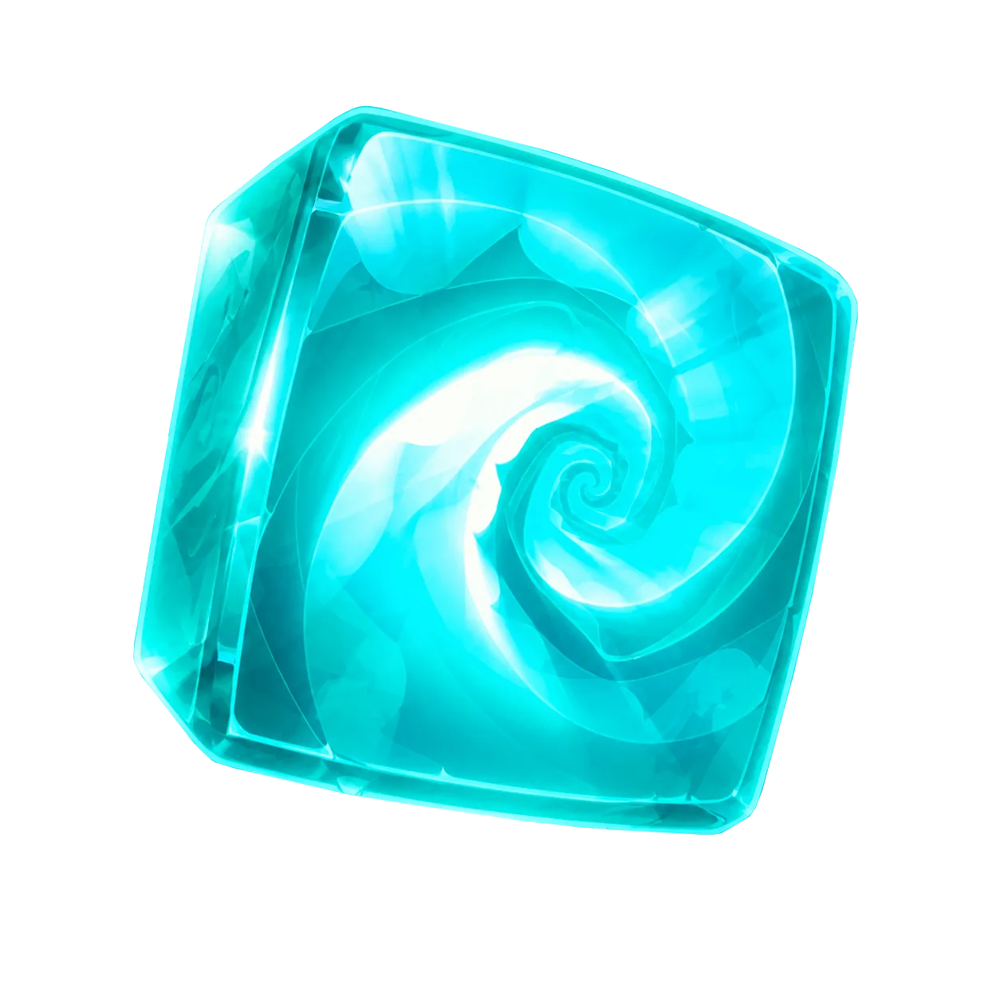

L’Eliacube
L’Eliacube est un artefact légendaire conçu par Qilby à partir du cœur du Méchasme Orgonax. Véritable condensateur de Wakfu, il possède la capacité de stocker, amplifier et redistribuer une quantité d’énergie pratiquement illimitée. Son immense puissance permet d’alimenter des machines colossales, de remodeler la matière, de manipuler l’espace ou encore d’ouvrir des portails interdimensionnels à travers le Krosmoz.
L’Eliacube fut notamment utilisé comme source d’énergie principale du vaisseau Zinit durant l’exode des Eliatropes. L’artefact réagit également aux pensées et aux émotions de son porteur, influençant parfois son esprit au fil du temps. Sa structure vivante peut se déployer sous différentes formes, servant aussi bien de moteur, d’arme ou de catalyseur magique.
Symbole du génie des Eliatropes autant que de leur chute, l’Eliacube demeure l’un des objets les plus convoités et redoutés du Krosmoz.